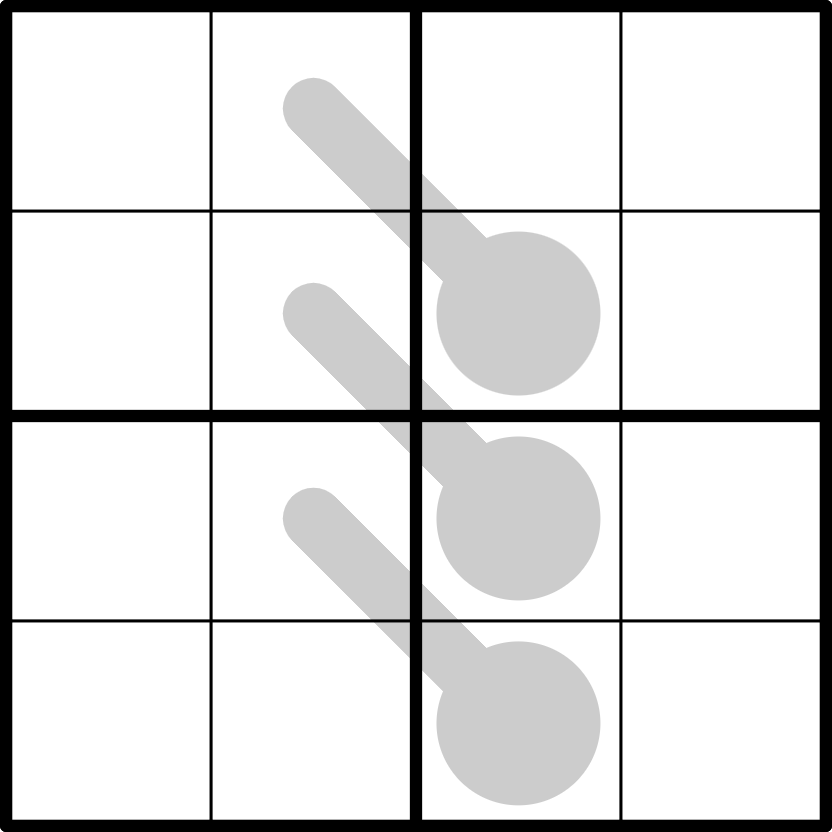

Microthermo - ⭐️

LINK
REGELS:
Standaard sudoku:
Plaats de cijfers van 1 t/m 4 eenmaal in elke rij, kolom, en 2x2 blok.
Thermometer:
Cijfers op een thermometer groeien in waarde vanaf de bol naar de top.